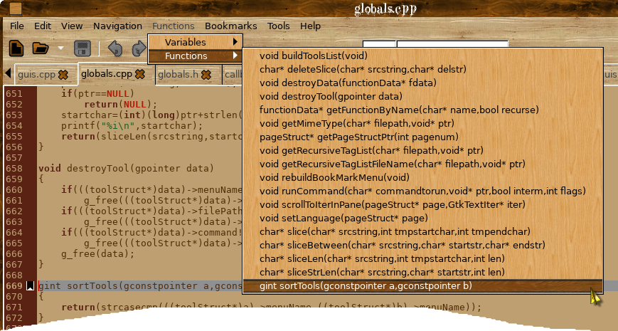

Help Manual
Navigation Menu
Functions Menu
Tools Menu
Navigation Menu
The Navigation menu has two sub-menus - Go To Definition and Open Include File.
To go where a function etc is defined, select it and choose 'Go To Definition' KKEdit will then look in open files for the definition and switch to that page and highlight the appropriate line like so:

As you can see as the definition was not in an open file KKEdit looks for the definition recursively starting from the folder where the file was opened from and if found opening the file and selecting the line with the definition.
Functions Menu
The Functions menu contains a list of all defined functions, variables and defines that are visible in this file, to jump to the appropriate function definition just select it from the menu like so:

Tools Menu
The Tools menu allow you to run an external script ie to open a terminal with the working directory set to the folder where the current file is open:

External tools can either be added globaly to /usr/share/KKEdit/tools (if you have installed with --prefix=/usr) or locally in ~/.KKEdit/tools.